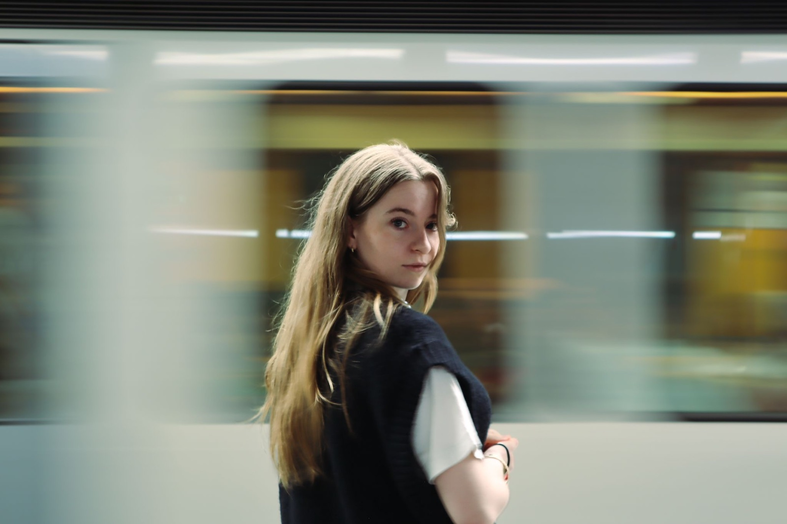
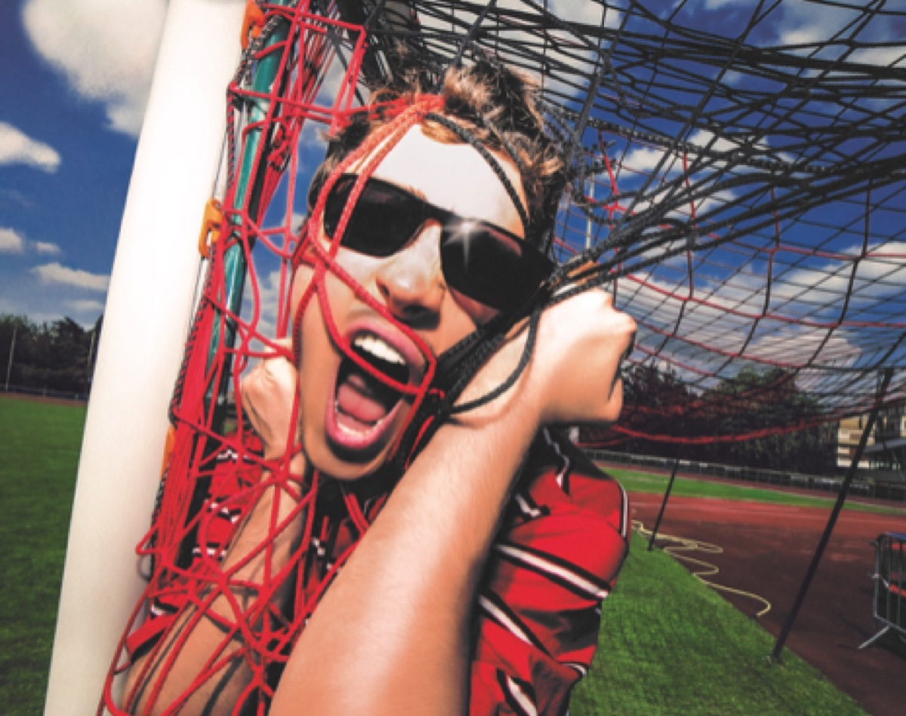
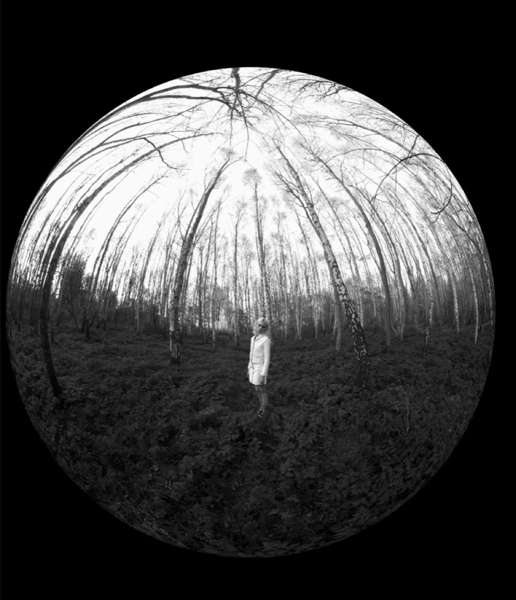
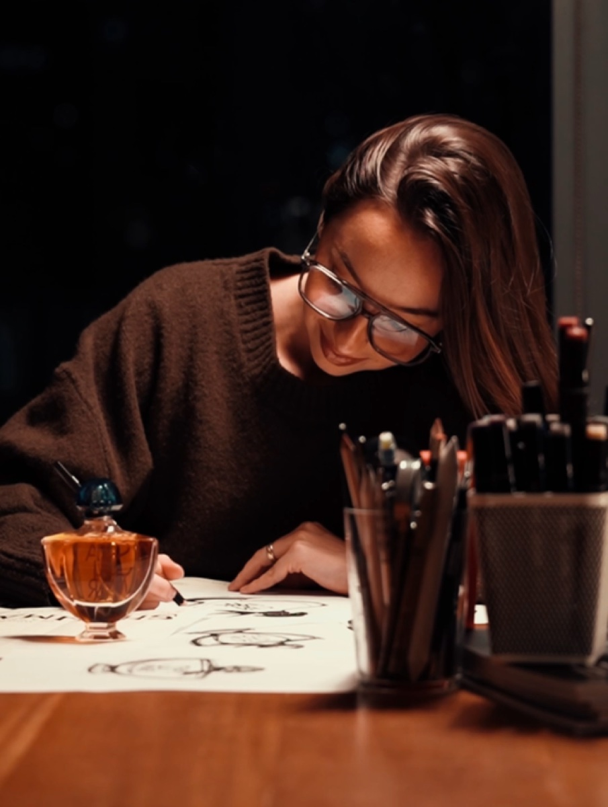
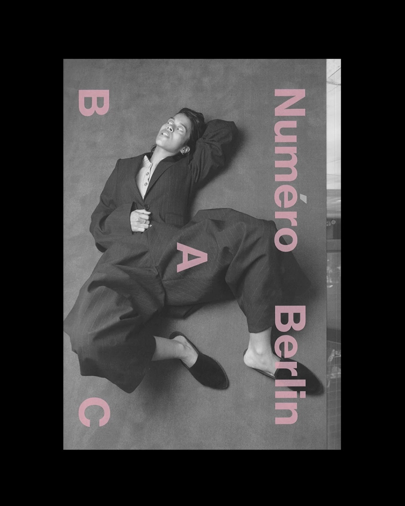
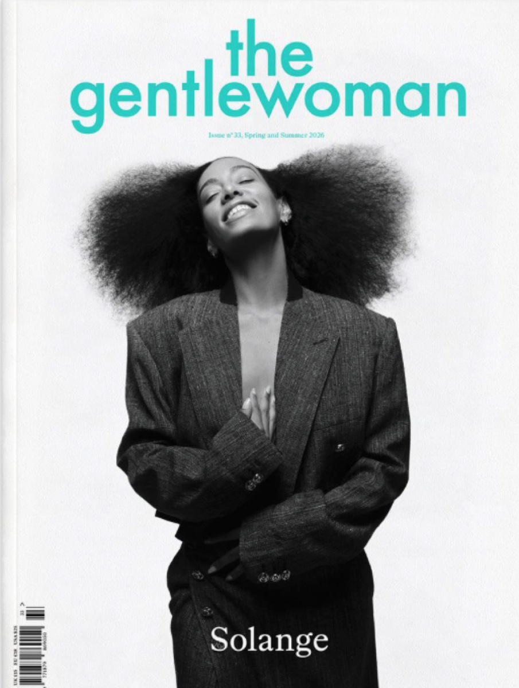
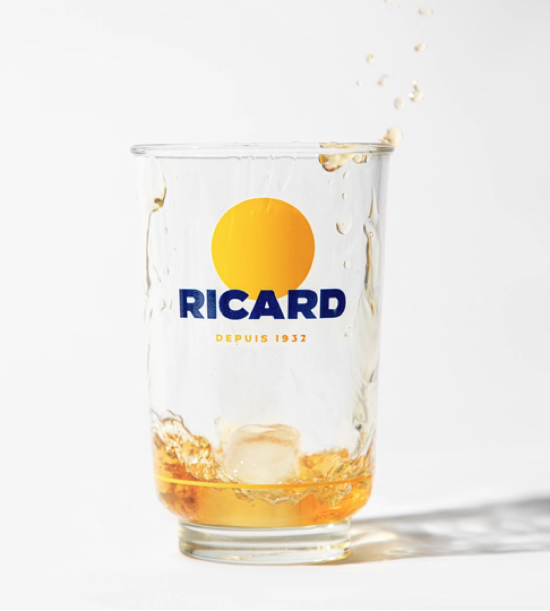

Je suis étudiante en troisième année à l'EFAP, mais pour comprendre qui je suis, il faut remonter un peu plus loin.
Avant ça, j'ai fait trois ans de droit. Ce n'est pas un détour, c'est une fondation. Cette expérience m'a appris à structurer ma pensée, à être rigoureuse, à ne jamais avancer sans comprendre pourquoi. Ce sont des réflexes qui m'accompagnent encore aujourd'hui dans chaque projet.
J'ai aussi grandi dans une famille très créative. Mon arrière-grand-mère était peintre, et j'ai passé beaucoup de temps dans son atelier, j'ai donc voulu renouer avec cet héritage. C'est pourquoi j'ai décidé de me réorienter et d'entrer à l'EFAP.
J'ai d'abord exploré le marketing digital, puis j'ai déménagé à Paris pour découvrir le milieu de l'audiovisuel. Cette expérience m'a transformée. J'ai aimé apprendre les coulisses d'un tournage, travailler en équipe et comprendre l'exigence de ces métiers.
En parallèle de mes études, j'ai eu l'occasion d'être manageuse d'une boutique Amorino. Jongler entre l'agenda scolaire et un poste à responsabilités m'a appris à m'organiser, à tenir le rythme et surtout à avoir un regard sur toute une chaîne de production.
Toutes ces expériences, je les garde avec moi. D'ailleurs, je continue de travailler occasionnellement pour les structures avec lesquelles j'ai effectué un stage.
La direction artistique, ce n'est pas un choix par défaut, c'est la convergence de tout ce que j'ai traversé. Elle réunit l'exigence technique que j'ai appris à aimer, la créativité que j'ai toujours portée et une envie constante de cultiver ma curiosité en travaillant sur de nouveaux projets.
C'est à cette croisée des chemins que je me sens à ma place.
1
À propos de moi.

Mon univers.
Mes inspirations

Camille Le Coq
Une photographe qui émerge sur les réseaux et que je suis de près. J'aime beaucoup son travail sur les couleurs avec des saturations très marquées qui me font penser à Martin Parr.

Sølve Sundsbø
Parce qu'il repousse les limites de la photographie traditionnelle, expérimente constamment avec les technologies et les effets visuels, et a su développer une signature artistique forte et reconnaissable.

Agathe Clément
Je me retrouve dans son esthétique, mais ce que je préfère c'est la manière dont elle raconte son processus créatif. Ça me donne envie de faire passer l'imaginaire au concret.

Bureau Borsche
Pour cette esthétique vintage qui donne aux photos une atmosphère vraiment particulière. Notamment dans les campagnes Birkenstock et dans la DA de Numéro Berlin, qui est pour moi un véritable objet d'art.

The Gentlewoman
Pour la façon dont ce magazine met en valeur les femmes. J'adore sa mise en page épurée et déstructurée. J'aime l'idée qu'on peut être impactant avec un minimum d'éléments.

Yorgo Tloupas
Parce qu'il ne suit pas les codes traditionnels. Il a développé un travail singulier autour de la typographie, puise ses influences dans le sport et la rue, et a su créer un style immédiatement identifiable.
Mon parcours
Une trajectoire.
Scrollez ↓
Avril 2026 — En cours
Cheffe de projet
Duc Factory
Gestion du projet en autonomie complète
Sélection des produits et des fournisseurs
Design des packagings
Développement et refonte du site internet
Mars 2026
Assistante de production
Artus, Le show inédit
Référente production des comédiens du film « Un petit truc en plus »
2026
Photos & vidéos
Basique (média)
Zénith de Théodora
Zénith d'Héléna
Sept. 2025 — Janv. 2026 · 5 mois
Stage en communication
Morgane Production
Gestion et animation des réseaux sociaux
Assistante de production sur les tournages
Création de contenus visuels
2025
Court métrage
Cadre scolaire
Prix de la meilleure réalisation, Mobart Festival (@filtree_)
Storyboard, réalisation, cadrage
Montage Première Pro
Déc. 2024 — Mars 2025 · 4 mois
Stage en marketing digital
Duc Factory
Création et gestion de contenu e-commerce
Automatisation des processus (Make.com, ChatGPT)
Optimisation SEO
Participation à l'obtention et au maintien de la première position sur Google
2023
Réalisation photos & vidéos
Superbison.com
Clips de lancement de collection
Shooting enfant été 2023
2022 — Août 2025
Manager
Amorino
Vendeuse (2022 – 2023)
Responsable (2023 – 2024)
Manager (2024 – août 2025)
Formation et encadrement des équipes
Gestion des plannings, stocks et commandes fournisseurs